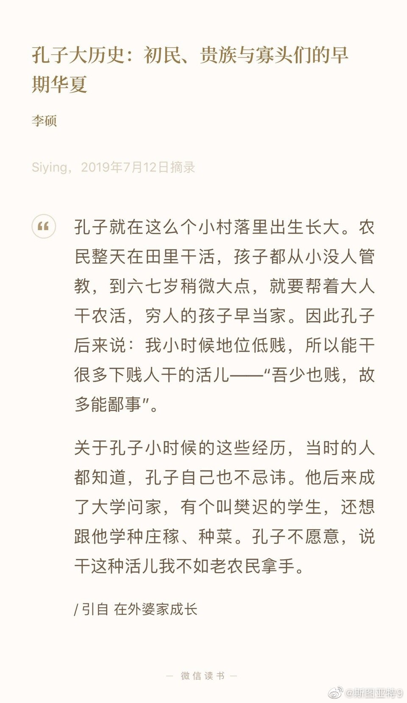

原来孔子是穷人家出身，从小干农活。“四体不勤五谷不分”看来真不是说孔子。是不是说当年批判孔子的时候，就把这句解读成劳动人民批评孔子这个在无产阶级头上作威作福的寄生虫？现在斗转星移又开始讲儒家传统了，我一搜，发现搜索的结果都说这八个字不是指孔子。 
#原来# 美国最高法院1944年判决二战期间将日裔关集中营符合宪法的决定（网页链接），在去年判决特朗普禁止穆斯林入境的案子中被推翻了。大家都知道判定的决定是美国政府有权禁止那几个穆斯林国家的人入境。还真不知道，判决书上说，顺便说一句，既然提起了这事，1944年那个决定是错误的。
天书广播这一集《回不回国？吴文藻与冰心》真是很好听： 网页链接 。讲50年代初回国的海外人士的心理斗争。有一些听上去想不到由在情理之中的分析。比如说，由于美国在二战期间把日裔关集中营的先例，在美国的中国人在朝鲜战争开打之后有会被迫害的恐慌，感到呆在美国也不是很好的选择。这两年美国伊朗剑拔弩张，徘徊在战争的边缘，我们组的伊朗同事总表示他担心收到美国政府的迫害。之前总觉得有点反应过激。但结合这个节目仔细想想，会觉得也许到自己头上也真的会产生不确定性带来的恐惧。